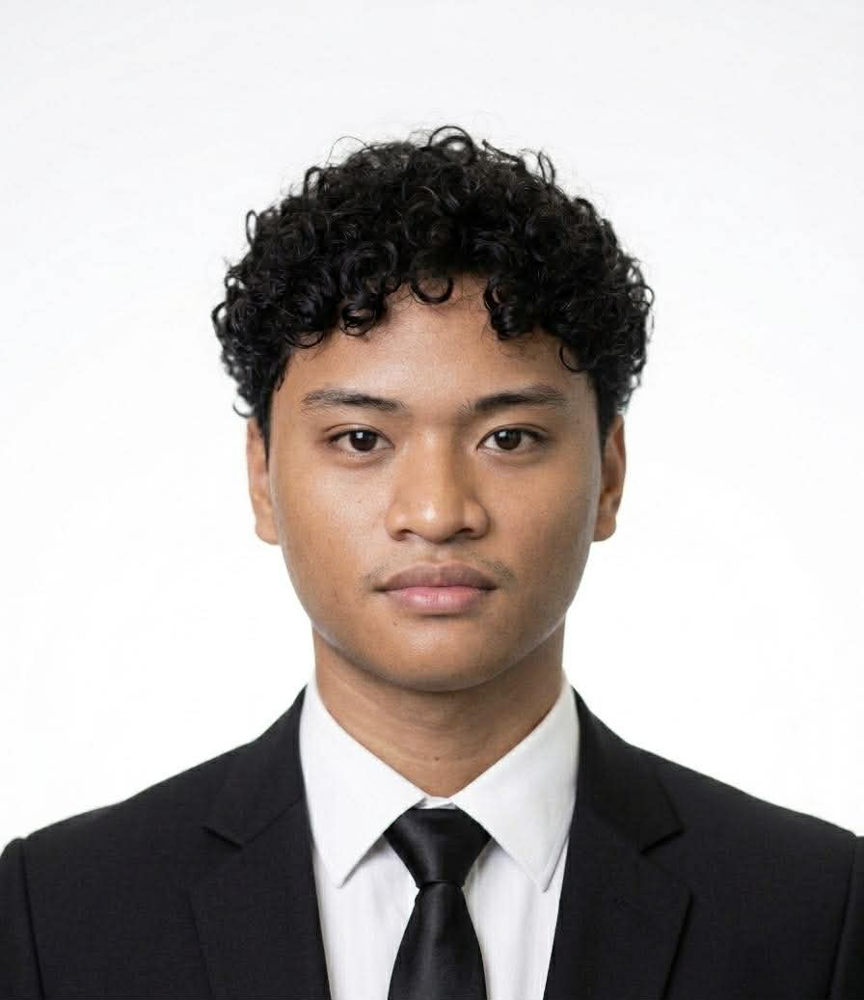
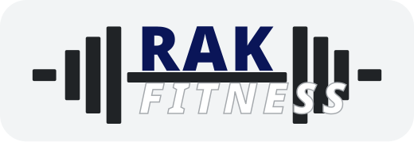
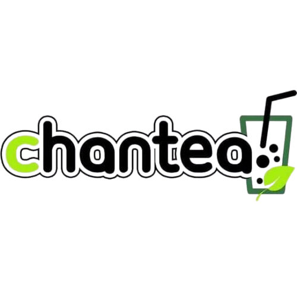

ClassVision thesis process
I worked across dataset preparation, class definition, CVAT labeling policy, data cleaning, by-video splitting, YOWOv2 training, inference review, and defense documentation.
Full-stack developer - CS graduate - secure systems
I am Russel Jhon C. Buisan, a full-stack developer from the University of Southern Mindanao. My portfolio focuses on secure web applications, computer vision research, multi-service platforms, database-backed APIs, and documentation that makes the work easy to review in an interview.

Dataset preparation, CVAT annotation policy, YOWOv2 training notes, evaluation figures, and defense materials.
React, Next.js, Laravel, FastAPI, Django, ASP.NET Core, PostgreSQL, Redis, Docker, APIs, and admin dashboards.
RBAC, CSRF protection, encrypted data, audit logs, authorized testing, biometric consent, and privacy boundaries.
About Me
My projects include a YOWOv2 classroom activity-detection thesis, a USMctf platform, a secure thesis defense scheduler, a gym face-attendance system, a Cheen Tea kiosk/POS, the USM Agapay service desk, API labs, and an authorized university security workspace.
Alongside code, I prepare setup notes, diagrams, evaluation figures, reports, and presentation materials so reviewers can see what I built, why it works, and where the boundaries are.
Selected Projects
Each card states the problem, the stack, what I built, and the interview points I can discuss.
Showing 9 projects
Privacy-conscious classroom video analytics framework for detecting visible activity context: studying, idle, collaborative, and arriving/leaving. The project includes classroom CCTV clip preparation, annotation policy, dataset validation, YOWOv2 training notes, inference post-processing, evaluation figures, and web-based monitoring design.
A secure academic scheduling system for students, faculty, Department Research Coordinators, college admins, and global admins.

A gym operations system with members, plans, payments, attendance, enrollment, reports, and local face-based time-in/time-out.

Tea-shop kiosk and POS platform with customer ordering, cashier views, kitchen boards, admin screens, loyalty rewards, QR registration, and voice-order processing.
University service-ticket platform with role-based access, offices, services, staff queues, ticket activity, notifications, evaluations, ARTA metrics, reports, and audit logs.
Full-stack capture-the-flag platform with a Next.js frontend, Laravel authentication and user management, FastAPI challenge service, scoring flow, admin tooling, Docker Compose, PostgreSQL, and Redis.
Structured workspace for approved security research with scope, methodology, Burp projects, Ghidra tools, findings, threat intelligence, PoC safety notes, reporting, and remediation handoff.
Python examples and explanations for Genetic Algorithms, Markov Decision Processes, and Particle Swarm Optimization using only the standard library.
ASP.NET Core 7 REST API lab using controllers, DTOs, EF Core migrations, SQLite persistence, Swagger/OpenAPI, and a student data model.
Detailed Portfolio Notes
These notes explain the decisions and artifacts behind the larger builds.
I worked across dataset preparation, class definition, CVAT labeling policy, data cleaning, by-video splitting, YOWOv2 training, inference review, and defense documentation.
I built around role boundaries and secure data handling: cookie-based JWTs, refresh rotation, signed CSRF tokens, encrypted sensitive fields, audit logs, admin scoping, and controlled PDF generation.
The gym, kiosk, and Agapay projects cover enrollment, payments, attendance, service queues, reporting, kitchen queues, cashier views, rewards, and customer-facing ordering.
I prepared thesis drafts, methodology guides, intelligent-system reports, figures, defense presentation clips, contact sheets, PowerPoint scripts, and project notes.
Skills
These are the tools and engineering areas represented in the portfolio.
React, Next.js, Vite, TypeScript, Tailwind CSS, dashboards, kiosk UI, admin screens, responsive layouts.
FastAPI, Laravel, Django, ASP.NET Core, REST APIs, auth flows, services, schemas, controllers, migrations.
YOWOv2 training notes, CVAT labels, dataset preparation, checkpoint documentation, inference post-processing, InsightFace embeddings.
PostgreSQL, SQLite, Redis, Docker Compose, Alembic, SQLAlchemy, EF Core, seed scripts, local services.
RBAC, JWT cookies, CSRF protection, bcrypt, AES-GCM, audit logs, rate limiting, and authorized testing notes.
Thesis manuscript drafting, methodology guides, evaluation figures, defense slides, technical reports, and project notes.
BSCS Thesis
My thesis develops a privacy-conscious computer vision framework for classroom activity-context monitoring. It avoids face recognition and identity profiling, and focuses on activity-level and room-level interpretation.
Classroom CCTV clips, frame extraction, annotation policy, CVAT export, cleaning, validation, and by-video splitting.
YOWOv2 medium training notes with 16-frame clips, checkpoint selection, inference, filtering, and duplicate suppression.
Accepted detections are converted into room activity summaries rather than identity-based student records.
Evaluation figures, manuscript sections, defense presentation clips, contact sheets, and slide generation.
Links